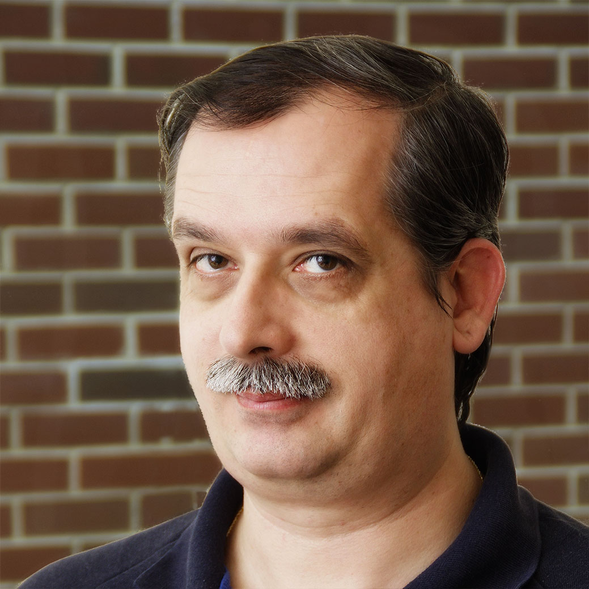
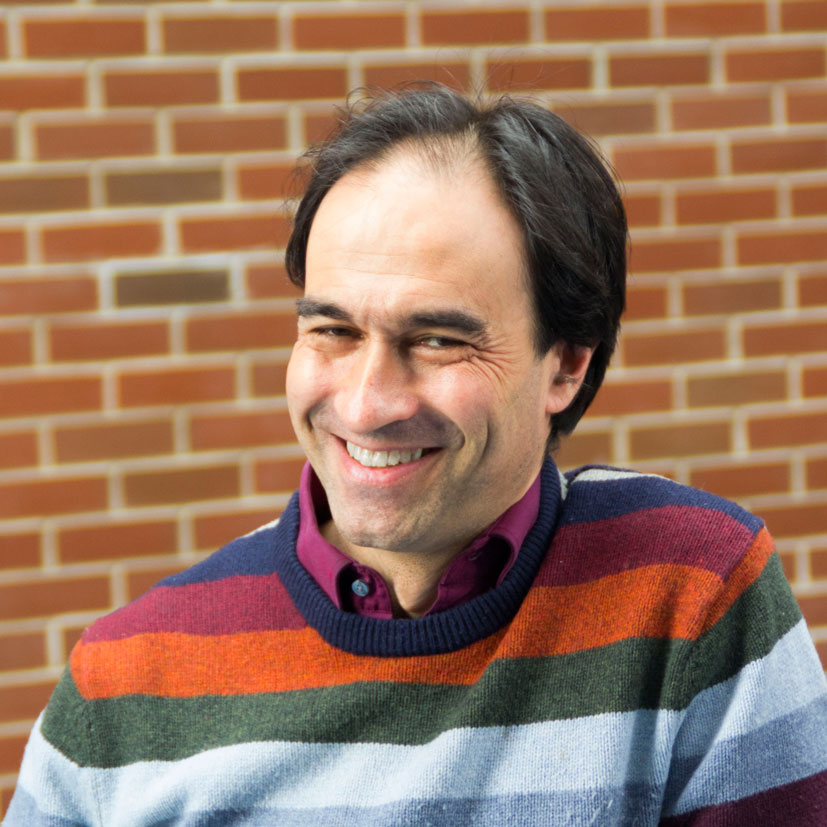

Head of department
| Dr. Katona Gyula associate professor IB 133/aa tel: 463-2587 |
 |
Full and part time members
| Dr. Csákány Rita associate professor IB 137/a tel: 463-3156 |
 |
Csehi Csongor György assistant lecturer IE 2.17.3 tel: 463-3159 |
|
| Dr. Csima Judit associate professor IB 136/b tel: 463-2987 |
 |
Dr. Fleiner Tamás associate professor IB 137/b tel: 463-3161 |
|
| Dr. Friedl Katalin associate professor IB 137/a tel: 463-3156 |
Dr. Györfi László professor emeritus IE 215 tel: 463-3146 |
||
| Kaszanitzky Viktória assistant professor IE 2.17.2 tel: 463-3158 |
Dr. Ketskeméty László associate professor IE 2.16.2 tel: 463-2897 |
||
| Dr. Pach Péter Pál assistant lecturer IB 136/b tel: 463-2987 |
Dr. Pintér Márta associate professor IE 2.17.2 tel: 463-3158 |
 |
|
| Dr. Recski András egyetemi tanár IE 214 tel: 463-2984 |
 |
Dr. Sali Attila associate professor IB 137/b tel: 463-3161 |
|
| Dr. Schlotter Ildikó associate professor IB 136/b tel: 463-2987 |
Dr. Simonyi Gábor egyetemi tanár IE 2.17.3 tel: 463-3159 |
 | |
| Szabó Réka assistant lecturer IB 136/a tel: 463-3162 |
Dr. Szeredi Péter nyug. associate professor IE.2.16.3 tel: 463-2986 |
||
| Dr. Szeszlér Dávid associate professor IB.136A tel: 463-3162 |
 |
Dr. Telcs András associate professor IE.2.16.2 tel: 463-2897 |
 |
| Dr. Tóth Géza associate professor IB 137/b tel: 463-3161 |
 |
Dr. Wiener Gábor associate professor IB.136A tel: 463-3162 |
 |
PhD students
| Kabódi László IB 137/a 463-3156 |
 |
Papp László IE.2.17.3 463-3159 |
 |
| Varga Kitti IE.2.17.2 463-3158 |
 |
Zlatniczki Ádám IE.2.17.2 463-3158 |
Lecturers
| Balázs Barbara babraat@cs.bme.hu |
Bérczi Kristóf berczikr@freemail.hu |
| Buzga Viktor vik.barca@gmail.com |
Daróczy Bálint daroczyb@sztaki.hu |
| Drótos Márton marton.drotos@sztaki.hu |
Kápolnai Richárd richard@iit.bme.hu |
| Kiss Gergely kisss@cs.elte.hu |
Kőrösi Attila korosi@tmit.bme.hu |
| Mester Beáta banan.bea@citromail.hu |
Mihálka Éva Zsuzsanna zsmihalka@gmail.com |
| Nagy Péter peternagy0619@gmail.com |
Ottucsák György oti@cs.bme.hu |
| Pácsonyi Imre pacsonyii@cs.bme.hu |
Patkós Balázs patkos@renyi.hu |
| Peregi Tamás petamas@gmail.com |
Richlik György IE.2.16.2 463-2897 richlik@cs.bme.hu |
| Sándor Zoltán sandor.zoltan.14@gmail.com |
Sebők Márton sebokmarton@cs.bme.hu |
| Simon Balázs sbalazs03@freemail.hu |
Szatmári Zoltán zee@cs.bme.hu |
| Tassy Gergely tassyg@gmail.com |
Titkos Tamás titkostamas@gmail.com |
| Vidor Sára vidor.sari@gmail.com |
Administration and IT
| Czenkiné Boltizár Katalin IB.133B tel: 463-2585 |
 |
Magyarné Boltizár Ildikó IB.133B tel: 463-2585 |
 |
| Vas Lászlóné IB.132 tel: 463-2585 |
|||
| Bornemissza Péter system administrator IE.504 tel: 30/fivenineone-2693 |
Molnár Péter system administror IB.135 tel: 30/eightfourone-2320 |